Sabrina Lakhdhir
Developer & Artist
1. ConnectGEN
Course project for CPSC 481: Human Computer Interactions I. Completed in a group of 5 students.
The focus of this course was on the usability and prototype interface, more so than on the functionality. The goal of ConnectGEN was to create a cross-generational communication system to ease
communication methods between generation gaps in families, such as between grandparents who struggle with using technology and young children who are just beginning to learn how to use technology.
This was coded in C#, using Visual Studios.
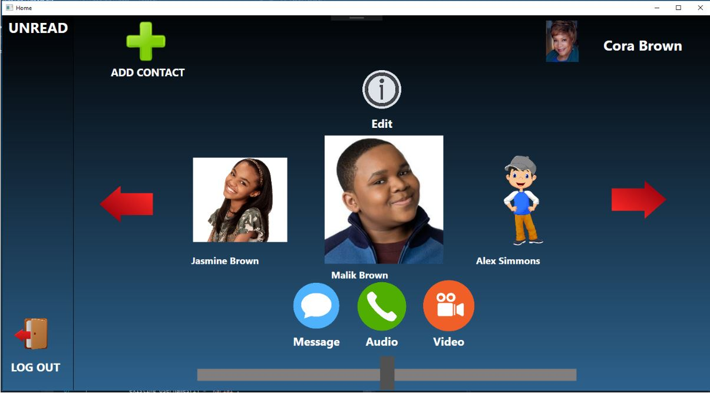
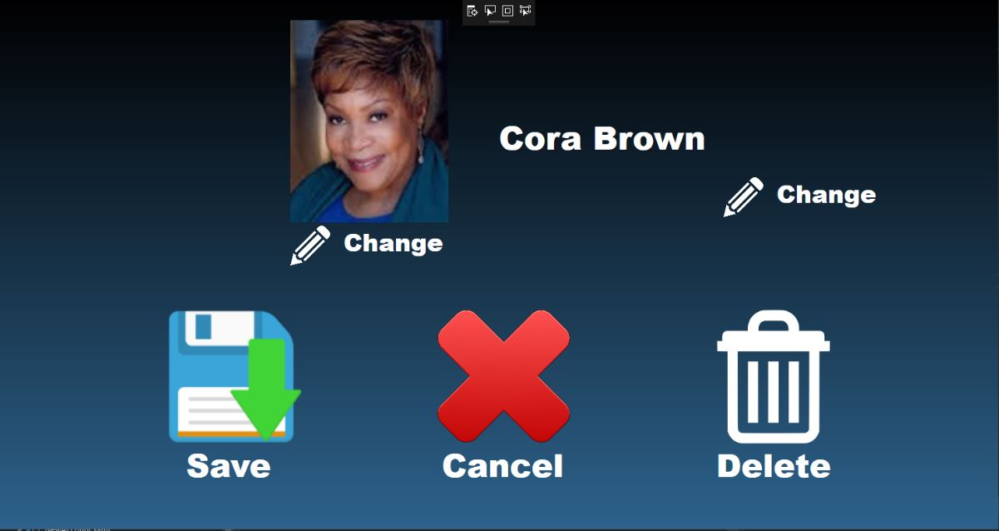
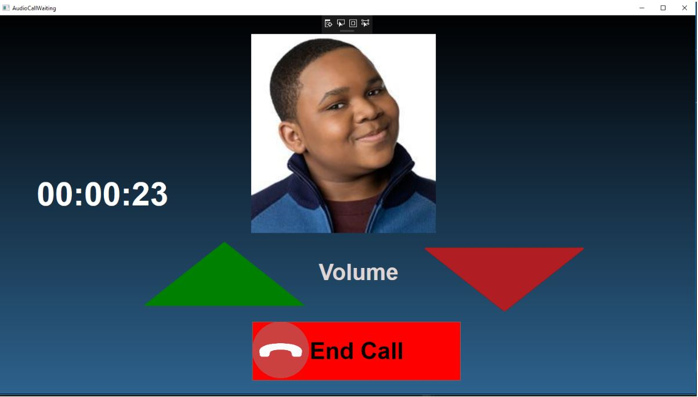
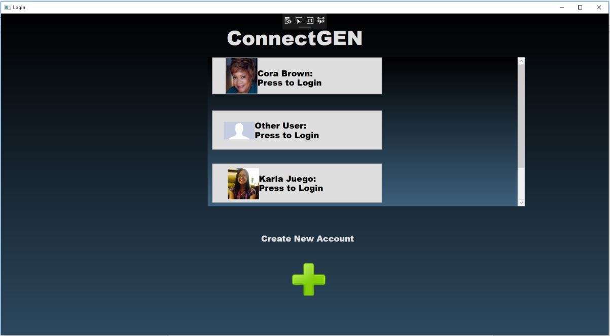
2. GoLocal
Course project for CPSC 405: Software Entrepreneurship (note: this course was a combined section with ENTI 381). Completed in a group of 6 students, 3 of which were from a computer science background, 3 of which were from a business background.
The focus of this course was on start-ups and creating a business from the start of a small business idea. The goal of GoLocal was to create a cross-platform system which allows users to connect with locals when abroad. GoLocal's mission statement was
"To foster a welcoming environment where people who are far from home can connect with those close to home, and to help bridge the culture gap by encouraging genuine interactions"
This was coded in HTML, Ionic, and Angular, using Visual Studios Code.
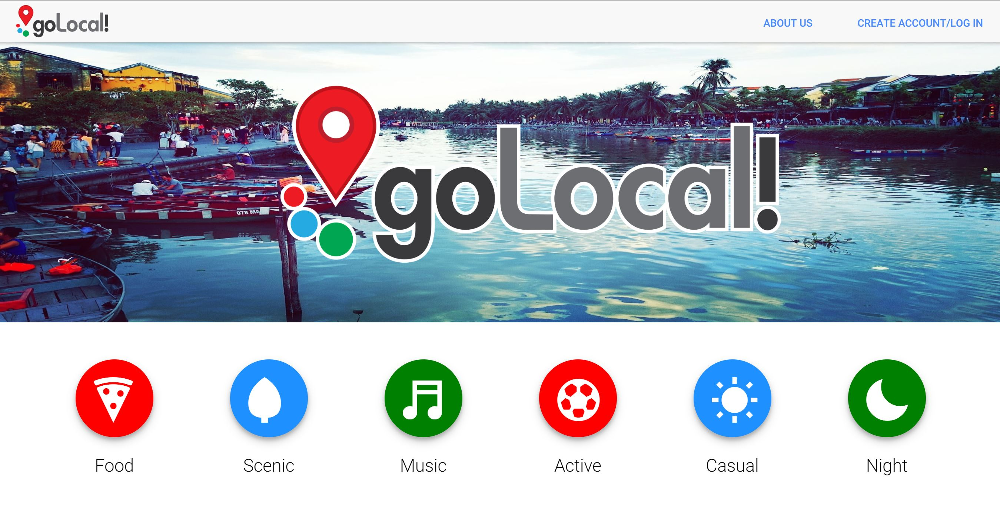
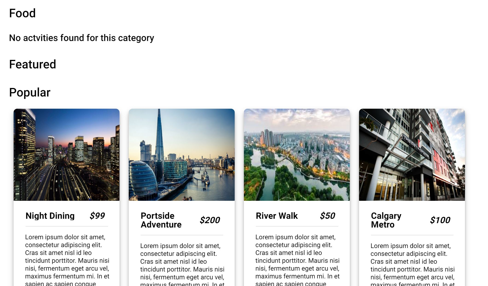
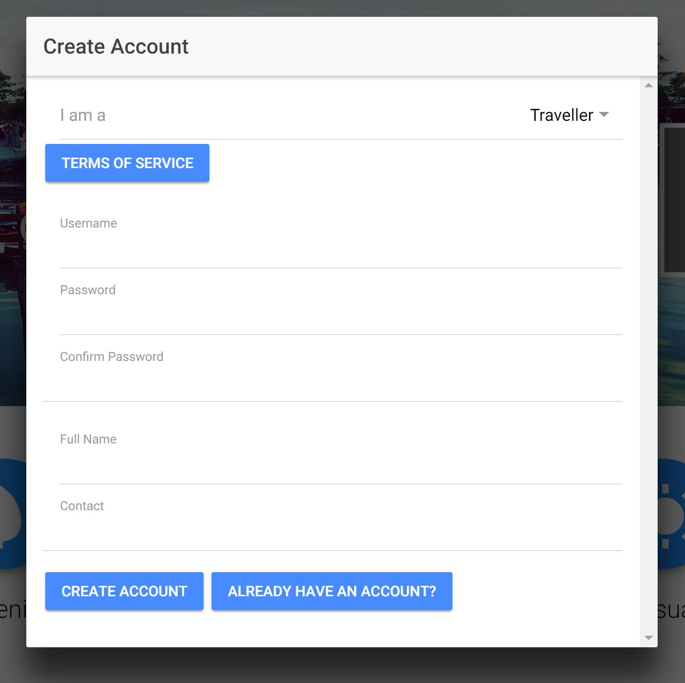
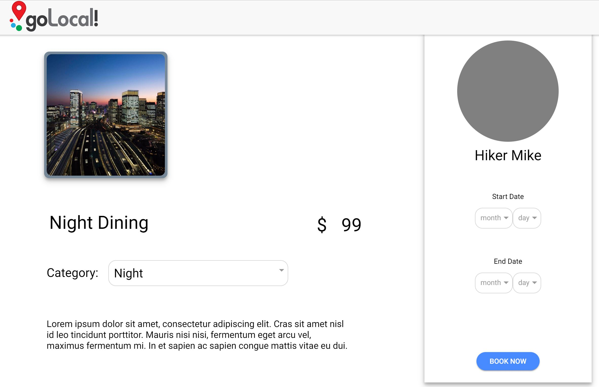
3. Spring Sprung
Course project for CPSC 575: iProgramming for Creative Minds. Completed in a group of 5 students. Worked with a client, Isto inc., to produce a working prototype of a game which is to be further developed by the company.
The focus of this course was to learn how to build an iOS Application. Due to the nature of our specific project, we built a game using Unity, so the game could later be exported as either an Android or iOS app.
This was coded in C#, using Unity and Visual Studios.
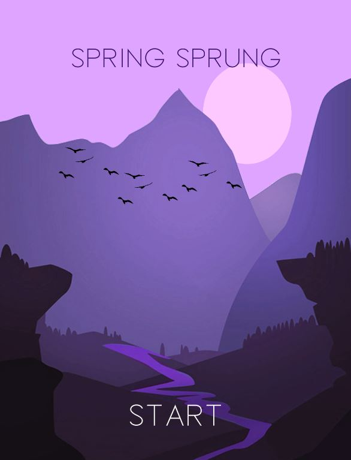
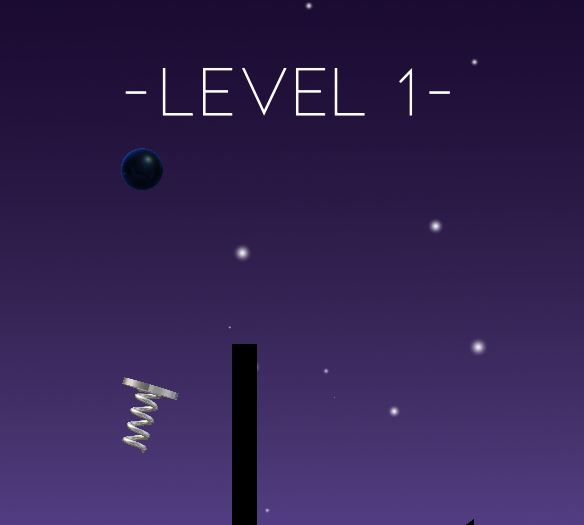
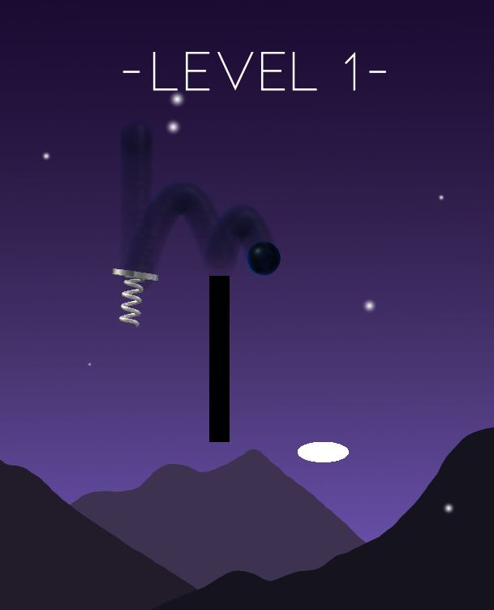
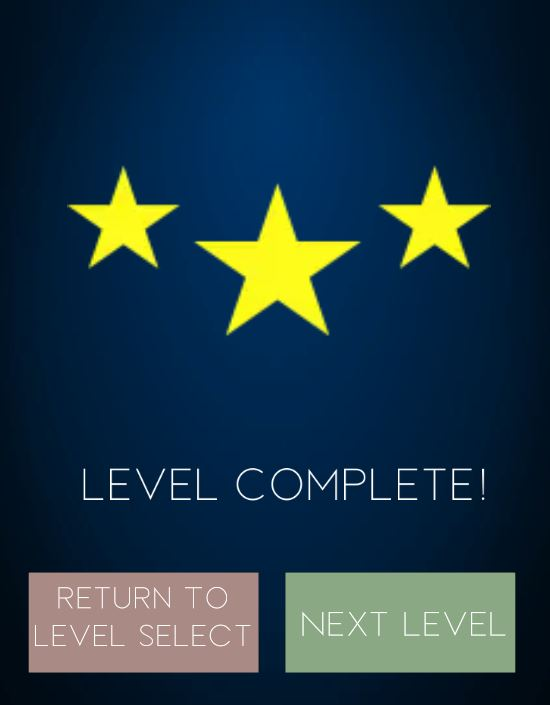